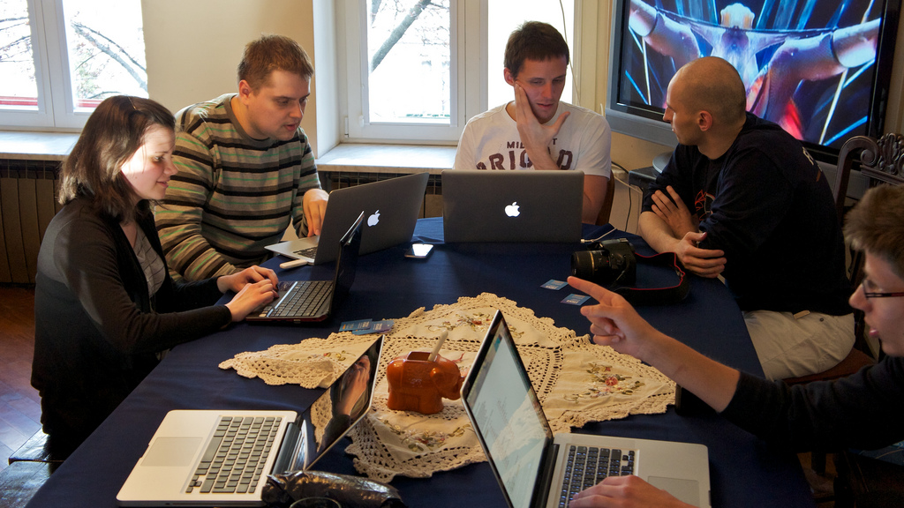
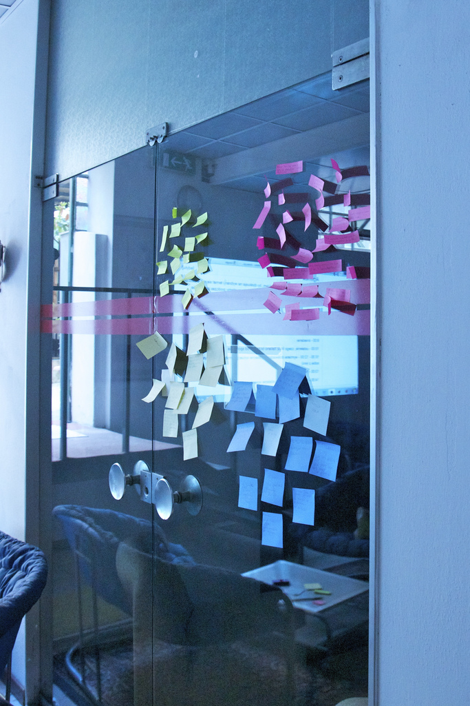

<!DOCTYPE html>
<!-- This is an HTML template for your slides
     If the transitions are too slow on your computer,
    remove 'transitions' from the <html> tag. -->
<html data-transitions>
<meta charset="utf-8">
<title>Aviary.pl: This Is How We Roll</title>
<link href='http://fonts.googleapis.com/css?family=Open+Sans:400,700,400italic,700italic' rel='stylesheet' type='text/css'>
<style>
  html { background-color: black; }
  body { background-image: url(http://i.minus.com/ib2CiEpt3F9G2o.png); background-size: 800px 600px;}
  /* A section is a slide. It's size is 800x600, and this will never change */
  section {
    color: white;
    font-family: 'Open Sans', sans-serif;
    font-size: 40px;
  }
  .image { line-height: 600px; vertical-align: middle; padding: 0; background-image: none}
  .image img { width: 800px; }
  h1, h2 {position: absolute;  text-align: center; width: 760px; margin: 0 20px}
  h1 {top: 250px; font-size: 50px; }
  h2 {top: 270px; font-size: 35px; }
  h3 {margin: 40px 0 80px 180px; font-size: 35px; }
  p {margin: 0 100px; font-size: 30px}
  ul {width: 100%; text-align: center;}
  li {list-style: none;}
  footer {font-size: 30px; position: absolute; bottom: 10px; right: 20px;}
  a, a:visited {text-decoration: none; color: #86C4FF} a:hover {text-decoration: underline}
  /* Transition effect */
  /* Feel free to change the transition effect for original
     animations. See here:
     https://developer.mozilla.org/en/CSS/CSS_transitions
     How to use CSS3 Transitions: */
  /* Delete this block if you don't want transitions */
  html[data-transitions] section {
      -moz-transition: left 400ms linear 0s;
      -webkit-transition: left 400ms linear 0s;
      -ms-transition: left 400ms linear 0s;
      transition: left 400ms linear 0s;
  }
  /* Before */  section { left: -150%; }
  /* Now    */  section[aria-selected] { left: 0; }
  /* After  */  section[aria-selected] ~ section { left: +150%; }
  .incremental > *[aria-selected] { -moz-transition: 400ms; -webkit-transition: 400ms; -ms-transition: 400ms; transition: 400ms; }
  .incremental > *[aria-selected] ~ * { opacity: 0 }
</style>
<!-- {{{{ dzslides core
#
#
#     __  __  __       .  __   ___  __
#    |  \  / /__` |    | |  \ |__  /__`
#    |__/ /_ .__/ |___ | |__/ |___ .__/ core :€
#
#
# The following block of code is not supposed to be edited.
# But if you want to change the behavior of these slides,
# feel free to hack it!
#
-->
<!-- Default Style -->
<style>
  * { margin: 0; padding: 0; }
  details { display: none; }
  body {
    width: 800px; height: 600px;
    margin-left: -400px; margin-top: -300px;
    position: absolute; top: 50%; left: 50%;
    overflow: hidden;
  }
  section {
    position: absolute;
    pointer-events: none;
    width: 100%; height: 100%;
  }
  section[aria-selected] { pointer-events: auto; }
  html { overflow: hidden; }
  body { display: none; }
  body.loaded { display: block; }
  .incremental {visibility: hidden; }
  .incremental[active] {visibility: visible; }
  .image-container {text-align: center}
  .image-container img {max-width: 96%; max-height: 96%; }
</style>
<!-- One section = one slide -->
<section class="image"></section>
<section>
  <h1>aviary.pl<br>this is how we roll</h1>
  <footer>Marek Stępień (<a href="http://twitter.com/marcoos">@marcoos</a>)</footer>
</section>
<section>
  <h3>8 years in 4 bullet points :)</h3>
  <ul class="incremental">
    <li>Aviary.pl - founded in late 2003
    <li>27.09.2004 - official Mozilla l10n team 
    <li>Initial focus: Firefox+Thunderbird
    <li>Now an all-things-Mozilla &amp; GNOME team
  </ul>
</section>
<section>
    <h2>The team</h2>
</section>
<section>
    <p class="image-container"></p>
    <footer>&copy; Stef Plewako, CC-BY</footer>
</section>
<section>
    <h3>The team</h3>
    <ul class="incremental">
        <li>21 members
        <li>in 5 countres
        <li>on 2 continents
    </ul>
</section>
<section>
    <h3>L10n projects</h3>
    <ul class="incremental">
        <li>Firefox, Thunderbird, Fennec, Lightning
        <li>Bugzilla, AMO, SUMO, *.mozilla.org
        <li>KompoZer
        <li>GNOME
        <li>GWO - common Polish open source dictionary
    </ul>
</section>

<section>
    <h3>Web sites</h3>
    <ul>
        <li><a href="http://mozillapl.org/">MozillaPL.org</a> (15k forum users!)
        <li><a href="http://planet.mozillapl.org/">Planet Polish Mozilla</a>
        <li><a href="http://webwatch.mozillapl.org/">WebWatch</a>
        <li><del><a href="http://firefox.pl">firefox.pl</a>, <a href="http://thunderbird.pl/">thunderbird.pl</a></del>
    </ul>
</section>

<section>
    <h2>How do we work?</h2>
</section>

<section>
    <h3>Weekly stand-up IRC meetings</h3>
    <ul class="incremental">
        <li>every Monday at 9pm in #aviarypl
        <li>we quickly discuss what we did during last week
        <li>opportunity to ask questions
        <li>every meeting <a href="http://wiki.aviary.pl/Kategoria:Stand-up">logged on Wiki</a> 
    </ul>
</section>

<section>
    <p class="image-container"></p>
    <footer>&copy; Hubert Gajewski, CC-BY-NC</footer>
</section>

<section>
    <h3>semi-annual meetings <abbr title='in real life'>IRL</abbr></h3>
    <ul class="incremental">
        <li>Mozilla usually sponsors these meetings
        <li>An opportunity to discuss things more thoroughly...
        <li>...and have some fun!
        <li>Last time, we met in Florence with Mozilla Italia :)
    </ul>
</section>

<section>
    <h3>teh interwebz: Wiki</h3>
    <ul class="incremental">
        <li><a href="http://wiki.aviary.pl/">wiki.aviary.pl</a>, a MediaWiki instance
        <li>...with project pages listing team members, project status, work tools, policies &amp;c.
    </ul>
</section>

<section>
    <h3>teh interwebz: Bugzilla</h3>
    <ul class="incremental">        
        <li><a href="http://bugs.aviary.pl">bugs.aviary.pl</a>, a Bugzilla instance
        <li>...separate components for each project, tickets with to-do tasks &amp;c.
        <li>Boring, you know how it works :)
    </ul>
</section>

<section>
    <h3>other means of communication</h3>        
    <ul class="incremental">
        <li>email
        <li>Jabber IM (Google Talk)
        <li>phone calls in truly critical situations
        <li>mozilla.dev.l10n.pl newsgroup (not as often as we should)
    </ul>
</section>

<section>
    <h3>team and project structure</h3>
    <ul class="incremental">
        <li>semi-formal team structure: board &amp; audit committee
        <li>ideally, each project has a project leader, translator, QA'er and tester
    </ul>
</section>

<section>
    <h3>project leaders</h3>
    <ul class="incremental">
        <li>builds the team,
        <li>makes sure l10n ships on time
        <li>provides all tools and information, raising flags when necessary
        <li>responds to the board
    </ul>
</section>

<section>
    <h3>HR dept.</h3>
    <ul class="incremental">
        <li>runs the recruitment process
        <li>screens candidates
        <li>assigns and reviews test assignments
        <li>assigns them a mentor and project for their first 6 months
    </ul>
</section>

<section>
    <h2>accomplishments</h2>
</section>

<section>
    <h3>u kiddin' me?</h3>
    <ul class="incremental">
        <li>Go ask Mitchell what she thinks about Aviary.pl :)
        <li>Most of our projects are 100% localized the day they ship.
        <li>Recognized as quality localizers; team members are asked to work on paid projects (ex: Novell SUSE)
    </ul>
</section>

<section>
    <h3>Browser Marketshare in Poland</h3>
    <p class="image-container"></p>
</section>

<section>
    <h3>Browser Marketshare in Poland</h3>
    <ul>
        <li>46% Firefox</li>
        <li>24% MSIE</li>
        <li>19% Chrome</li>
        <li>9% Opera</li>
        <li>&lt;1% Safari</li>
    </ul>
    <footer>source: <a href="http://ranking.pl/pl/rankings/web-browsers-groups.html">GemiusRanking</a></footer>
</section>

<section>
    <h2>challenges</h2>
</section>

<section>
    <h3>challenges</h3>
    <ul class="incremental">
        <li>Not enough QA specialists and testers.
        <li>Not enough localizers.
        <li>Sometimes difficult to monitor this many projects/people properly.
    </ul>
</section>

<section>
    <h3>challenges, cont'd</h3>
    <ul class="incremental">
        <li>Some candidates see us as fortress.
        <li>Making sure the bureaucracy doesn't kill us.
        <li>Operational costs
    </ul>
</section>

<section>
    <h3>plans for the future</h3>
    <ul class="incremental">
        <li>Reach out to universities for QA specialists (we did that for translators).
        <li>Change the recruitment process to make us less fortress-like.
        <li>Pending legal registration as association.
    </ul>
</section>

<section>
    <h3>Mozilla & Aviary.pl</h3>
    <ul class="incremental">
        <li>Mozilla hired a PR agency in Poland. We're in touch &amp; cooperating.
        <li>Mozilla is helping sponsor our semi-annual meetings.
        <li>Just recently we asked for financial help with hosting costs and heard 'yes'.
</section>

<section>
  <h3>Thank you, that's all!</h3>
  <p><a href="http://www.aviary.pl">www.aviary.pl</a></p>
  <p>Follow us: <a href="http://twitter.com/aviarypl">@aviarypl</a> (not yet, but soon)</p>
  <footer>Content &copy; 2011 by Aviary.pl. Available under <a href="http://creativecommons.org/licenses/by-nc-sa/3.0/">CC&nbsp;Attribution Non-Commercial Share-Alike</a> license.
  Slides URL: <a href="http://stuff.marcoos.com/slides/2011/mozcamp-l10n-community">j.mp/aviarypl</a>.</footer>
</section>

<script>
  var Dz = {
    remoteWindows: [],
    idx: -1,
    step: 0,
    slides: null,
    params: {
      autoplay: "1"
    }
  };
  Dz.init = function() {
    document.body.className = "loaded";
    this.slides = $$("body > section");
    this.setupParams();
    this.onhashchange();
    this.setupTouchEvents();
    this.onresize();
  }
  
  Dz.setupParams = function() {
    var p = window.location.search.substr(1).split('&');
    p.forEach(function(e, i, a) {
      var keyVal = e.split('=');
      Dz.params[keyVal[0]] = decodeURIComponent(keyVal[1]);
    });
  }
  Dz.onkeydown = function(aEvent) {
    // Don't intercept keyboard shortcuts
    if (aEvent.altKey
      || aEvent.ctrlKey
      || aEvent.metaKey
      || aEvent.shiftKey) {
      return;
    }
    if ( aEvent.keyCode == 37 // left arrow
      || aEvent.keyCode == 38 // up arrow
      || aEvent.keyCode == 33 // page up
    ) {
      aEvent.preventDefault();
      this.back();
    }
    if ( aEvent.keyCode == 39 // right arrow
      || aEvent.keyCode == 40 // down arrow
      || aEvent.keyCode == 34 // page down
    ) {
      aEvent.preventDefault();
      this.forward();
    }
    if (aEvent.keyCode == 35) { // end
      aEvent.preventDefault();
      this.goEnd();
    }
    if (aEvent.keyCode == 36) { // home
      aEvent.preventDefault();
      this.goStart();
    }
    if (aEvent.keyCode == 32) { // space
      aEvent.preventDefault();
      this.toggleContent();
    }
  }
  /* Touch Events */
  Dz.setupTouchEvents = function() {
    var orgX, newX;
    var tracking = false;
    var db = document.body;
    db.addEventListener("touchstart", start.bind(this), false);
    db.addEventListener("touchmove", move.bind(this), false);
    function start(aEvent) {
      aEvent.preventDefault();
      tracking = true;
      orgX = aEvent.changedTouches[0].pageX;
    }
    function move(aEvent) {
      if (!tracking) return;
      newX = aEvent.changedTouches[0].pageX;
      if (orgX - newX > 100) {
        tracking = false;
        this.forward();
      } else {
        if (orgX - newX < -100) {
          tracking = false;
          this.back();
        }
      }
    }
  }
  /* Adapt the size of the slides to the window */
  Dz.onresize = function() {
    var db = document.body;
    var sx = db.clientWidth / window.innerWidth;
    var sy = db.clientHeight / window.innerHeight;
    var transform = "scale(" + (1/Math.max(sx, sy)) + ")";
    db.style.MozTransform = transform;
    db.style.WebkitTransform = transform;
    db.style.OTransform = transform;
    db.style.msTransform = transform;
    db.style.transform = transform;
  }
  Dz.getDetails = function(aIdx) {
    var s = $("section:nth-of-type(" + aIdx + ")");
    var d = s.$("details");
    return d ? d.innerHTML : "";
  }
  Dz.onmessage = function(aEvent) {
    var argv = aEvent.data.split(" "), argc = argv.length;
    argv.forEach(function(e, i, a) { a[i] = decodeURIComponent(e) });
    var win = aEvent.source;
    if (argv[0] === "REGISTER" && argc === 1) {
      this.remoteWindows.push(win);
      this.postMsg(win, "REGISTERED", document.title, this.slides.length);
      this.postMsg(win, "CURSOR", this.idx + "." + this.step);
      return;
    }
    if (argv[0] === "BACK" && argc === 1)
      this.back();
    if (argv[0] === "FORWARD" && argc === 1)
      this.forward();
    if (argv[0] === "START" && argc === 1)
      this.goStart();
    if (argv[0] === "END" && argc === 1)
      this.goEnd();
    if (argv[0] === "TOGGLE_CONTENT" && argc === 1)
      this.toggleContent();
    if (argv[0] === "SET_CURSOR" && argc === 2)
      window.location.hash = "#" + argv[1];
    if (argv[0] === "GET_CURSOR" && argc === 1)
      this.postMsg(win, "CURSOR", this.idx + "." + this.step);
    if (argv[0] === "GET_NOTES" && argc === 1)
      this.postMsg(win, "NOTES", this.getDetails(this.idx));
  }
  Dz.toggleContent = function() {
    // If a Video is present in this new slide, play it.
    // If a Video is present in the previous slide, stop it.
    var s = $("section[aria-selected]");
    if (s) {
      var video = s.$("video");
      if (video) {
        if (video.ended || video.paused) {
          video.play();
        } else {
          video.pause();
        }
      }
    }
  }
  Dz.setCursor = function(aIdx, aStep) {
    // If the user change the slide number in the URL bar, jump
    // to this slide.
    aStep = (aStep != 0 && typeof aStep !== "undefined") ? "." + aStep : ".0";
    window.location.hash = "#" + aIdx + aStep;
  }
  Dz.onhashchange = function() {
    var cursor = window.location.hash.split("#"),
        newidx = 1,
        newstep = 0;
    if (cursor.length == 2) {
      newidx = ~~cursor[1].split(".")[0];
      newstep = ~~cursor[1].split(".")[1];
      if (newstep > Dz.slides[newidx - 1].$$('.incremental > *').length) {
        newstep = 0;
        newidx++;
      }
    }
    if (newidx != this.idx) {
      this.setSlide(newidx);
    }
    if (newstep != this.step) {
      this.setIncremental(newstep);
    }
    for (var i = 0; i < this.remoteWindows.length; i++) {
      this.postMsg(this.remoteWindows[i], "CURSOR", this.idx + "." + this.step);
    }
  }
  Dz.back = function() {
    if (this.idx == 1 && this.step == 0) {
      return;
    }
    if (this.step == 0) {
      this.setCursor(this.idx - 1,
                     this.slides[this.idx - 2].$$('.incremental > *').length);
    } else {
      this.setCursor(this.idx, this.step - 1);
    }
  }
  Dz.forward = function() {
    if (this.idx >= this.slides.length &&
        this.step >= this.slides[this.idx - 1].$$('.incremental > *').length) {
        return;
    }
    if (this.step >= this.slides[this.idx - 1].$$('.incremental > *').length) {
      this.setCursor(this.idx + 1, 0);
    } else {
      this.setCursor(this.idx, this.step + 1);
    }
  }
  Dz.goStart = function() {
    this.setCursor(1, 0);
  }
  Dz.goEnd = function() {
    var lastIdx = this.slides.length;
    var lastStep = this.slides[lastIdx - 1].$$('.incremental > *').length;
    this.setCursor(lastIdx, lastStep);
  }
  Dz.setSlide = function(aIdx) {
    this.idx = aIdx;
    var old = $("section[aria-selected]");
    var next = $("section:nth-of-type("+ this.idx +")");
    if (old) {
      old.removeAttribute("aria-selected");
      var video = old.$("video");
      if (video) {
        video.pause();
      }
    }
    if (next) {
      next.setAttribute("aria-selected", "true");
      var video = next.$("video");
      if (video && !!+this.params.autoplay) {
        video.play();
      }
    } else {
      // That should not happen
      this.idx = -1;
      // console.warn("Slide doesn't exist.");
    }
  }
  Dz.setIncremental = function(aStep) {
    this.step = aStep;
    var old = this.slides[this.idx - 1].$('.incremental > *[aria-selected]');
    if (old) {
      old.removeAttribute('aria-selected');
    }
    var incrementals = this.slides[this.idx - 1].$$('.incremental');
    if (this.step <= 0) {
      incrementals.forEach(function(aNode) {
        aNode.removeAttribute('active');
      });
      return;
    }
    var next = this.slides[this.idx - 1].$$('.incremental > *')[this.step - 1];
    if (next) {
      next.setAttribute('aria-selected', true);
      next.parentNode.setAttribute('active', true);
      var found = false;
      incrementals.forEach(function(aNode) {
        if (aNode != next.parentNode)
          if (found)
            aNode.removeAttribute('active');
          else
            aNode.setAttribute('active', true);
        else
          found = true;
      });
    } else {
      setCursor(this.idx, 0);
    }
    return next;
  }
  
  Dz.postMsg = function(aWin, aMsg) { // [arg0, [arg1...]]
    aMsg = [aMsg];
    for (var i = 2; i < arguments.length; i++)
      aMsg.push(encodeURIComponent(arguments[i]));
    aWin.postMessage(aMsg.join(" "), "*");
  }
  window.onload = Dz.init.bind(Dz);
  window.onkeydown = Dz.onkeydown.bind(Dz);
  window.onresize = Dz.onresize.bind(Dz);
  window.onhashchange = Dz.onhashchange.bind(Dz);
  window.onmessage = Dz.onmessage.bind(Dz);
</script>
<script> // Helpers
  if (!Function.prototype.bind) {
    Function.prototype.bind = function (oThis) {
      // closest thing possible to the ECMAScript 5 internal IsCallable
      // function 
      if (typeof this !== "function")
      throw new TypeError(
        "Function.prototype.bind - what is trying to be fBound is not callable"
      );
      var aArgs = Array.prototype.slice.call(arguments, 1),
          fToBind = this,
          fNOP = function () {},
          fBound = function () {
            return fToBind.apply( this instanceof fNOP ? this : oThis || window,
                   aArgs.concat(Array.prototype.slice.call(arguments)));
          };
      fNOP.prototype = this.prototype;
      fBound.prototype = new fNOP();
      return fBound;
    };
  }
  var $ = (HTMLElement.prototype.$ = function(aQuery) {
    return this.querySelector(aQuery);
  }).bind(document);
  var $$ = (HTMLElement.prototype.$$ = function(aQuery) {
    return this.querySelectorAll(aQuery);
  }).bind(document);
  NodeList.prototype.forEach = function(fun) {
    if (typeof fun !== "function") throw new TypeError();
    for (var i = 0; i < this.length; i++) {
      fun.call(this, this[i]);
    }
  }
</script>
</html>
<!-- vim: set fdm=marker: }}} -->
